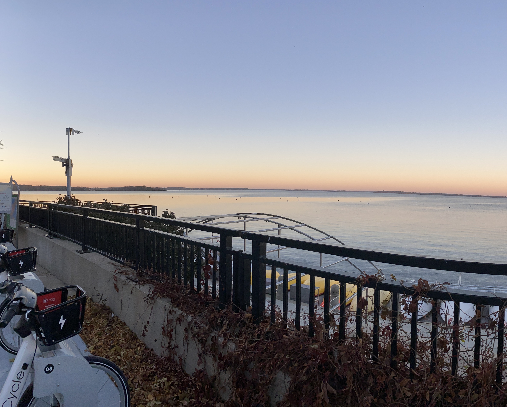

-Lake Shore Path
The lake shore path, located by memorial union, is perfect for when the weather is nice. I love taking long walks or jogs along the lake as a break from school work. There are also bikes at the beginning of the path which are a lot of fun!
